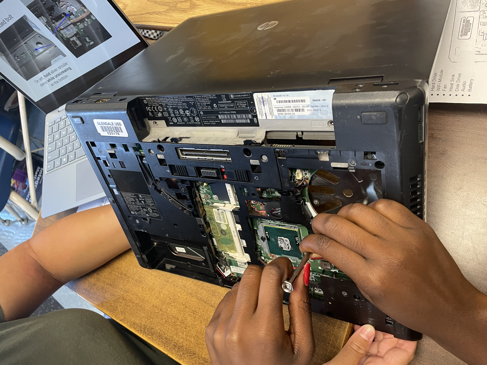

Hello my name is Jasmine, I am 17. I go to school eat cake too.
My favourite colour is pink. I am a senior. I like sunsets and traveling
September 02, 2022- Today was a challenge day; we had to make a home applience so I decided to make a baking mixer. I enjoyed CAD'ing but forming the metalic mixing part of the mixer was particularly difficult. The class before today's we learned a little about mechanical engineering which was nice because I am considering being either a mechanical or aerospace engineer. I'm excited to start our Rube Goldberg machine next week.
September 16, 2022- Today my groupmates and I built a boat to float on water out of paper. We combined a triangle top with two flipped over paper air planes. It did not work that well but we realize now that we should have had a larger surface area.
September 22, 2022- We got to test our Rube Goldberg machine in class. The balloon did not pop the first few times and we concluded that the needle that we were using was very weak and not sharp enough to pierce through the balloon. We solved this problem by using a thicker and pointy-er needle. And it worked! All in all I had a lot of fun builing and designing this project.


September 30, 2022- In class this week we dissected a computer. In other words we reverse engineered this super old and masive school computer in our table groups. We had to remove parts like the CPU, GPU, fan, CD player and much more. The goal way to get all the way down to just the motherboard but we were not able to because some of the screws were too small and tight to take out. Nevertheless I enjoyed taking apart the computer(not so much putting it back) and would definitely do it again.
October 07, 2022- This week the class worked on making prosthetics for animals. I was absent so I missed it however I heard that the activity was on tinker cad and people had creative ideas on inovating prosthetics. Today we had to create instructios on how to make a peanut butter and jelly sandwich. We read the instructions to the class and repeated the actions words for word. The purpose of this excersise was to teach us that computers need every little description to print code.
October 13, 2022- Today isn't a Friday but because we are going to have a guest speaker tommorrow I figured I would complete my entery today. We moved into a new unit this week... Aerospace engineering! For our project we are to build a rocket made of a 2 liter soda bottle that will launch in the air after the water pressure that fills it gets too high. My groupmates and I have completed the CAD for our design and researching things that will make our rocket more effective and aerodynamic.
October 21, 2022- Today we launched our rockets and it was very successful. Our rocket launched high into the air before falling and then accelerating again towards the end. Our payload however did not work the way we had hoped; we think it was because it was attached to the wrong side of the rocket and that it was on too tight but other than that it worked really well.
October 28, 2022- I was not at school this week because I had so many college application deadlines coming up. I heard from my groupmates that they filtered out water with rocks which sounded pretty cool.
November 4, 2022- Today I was not in class because I went with my robotics team to represent myteam and robot that we built during season. We explained our robot functions to kids and adults alike but also got the chance to see innovative robot avatars being created right now. It was a great experiance.
November 10, 2022- This week we learned about electrical engineering. We CAD'ed breadboards the first day and then the second day we made the irl. It was a bit frustrating getting the LED to light up, especially multiple at a time but it was very accomplishing when we did.